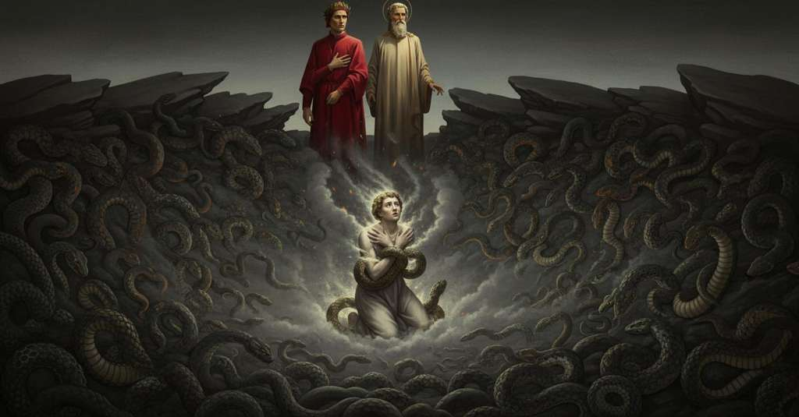

Inferno — Canto 24

Riassunto Summary 要約
Superata una faticosa salita, Dante giunge nella bolgia dei ladri, un fossato brulicante di serpenti, dove assiste alla metamorfosi del dannato Vanni Fucci, il quale, dopo aver confessato il suo furto sacrilego, gli rivolge una rabbiosa profezia politica.
After a strenuous climb, Dante reaches the bolgia of thieves, a pit swarming with snakes, where he witnesses the metamorphosis of the damned Vanni Fucci, who confesses his sacrilegious theft and delivers an angry political prophecy.
困難な登りを乗り越えたダンテは、蛇がうごめく盗人の濠に到着し、そこで罪人ヴァンニ・フッチの変身を目撃する。フッチは神聖なものを盗んだ罪を告白した後、ダンテに対して怒りに満ちた政治的予言を口にする。
Segmento 1 1–45
L'ira di Virgilio, provocata dall'inganno del diavolo, svanisce rapidamente, come la brina mattutina che prima fa disperare un contadino e poi, sciogliendosi, gli ridà speranza. Raggiunte le rovine del ponte crollato, Virgilio studia il percorso, poi aiuta fisicamente il narratore ad arrampicarsi, indicandogli gli appigli sicuri. La salita è estremamente faticosa, e il narratore ce la fa solo perché quella sponda della bolgia è più corta dell'altra a causa della pendenza di Malebolge. Raggiunta la cima, è così senza fiato che si siede subito per la stanchezza.
Virgil's anger, caused by the devil's deception, vanishes quickly, like the morning frost that first makes a peasant despair and then, by melting, restores his hope. Having reached the ruins of the collapsed bridge, Virgil studies the path, then physically helps the narrator to climb, pointing out the safe handholds. The climb is extremely arduous, and the narrator only makes it because that bank of the ditch is shorter than the other due to the slope of Malebolge. Upon reaching the top, he is so breathless that he immediately sits down from exhaustion.
悪魔の欺瞞によって引き起こされたウェルギリウスの怒りは、すぐに消え去る。それは、まず農夫を絶望させ、次に溶けることで希望を取り戻させる朝霜のようである。崩れた橋の瓦礫に着くと、ウェルギリウスは道筋を検討し、それから安全な足場を指し示しながら、語り手が登るのを物理的に助ける。登山は極めて困難であり、語り手が登りきれたのは、マーレボルジェの傾斜のためにその濠の岸がもう一方よりも短かったからに他ならない。頂上に着くと、彼は息も絶え絶えで、疲労のあまりすぐに座り込んでしまう。
Segmento 2 46–81
Virgilio esorta il narratore, spossato, a scuotersi di dosso l'accidia, ricordandogli che la fama non si ottiene riposando e che una scala ben più lunga li attende. Spronato, il narratore si alza, fingendo di avere più energia di quanta ne sentisse, e i due riprendono il cammino su per il ponte roccioso, più erto e difficile del precedente. Mentre attraversano, il narratore sente una voce rabbiosa e incomprensibile provenire dalla fossa sottostante. Incapace di vedere nel buio, chiede a Virgilio di scendere per capire meglio. Virgilio acconsente, affermando che a una richiesta onesta si deve rispondere con l'azione silenziosa. Scendono quindi dal ponte e la bolgia sottostante si manifesta.
Virgil exhorts the exhausted narrator to shake off his sloth, reminding him that fame is not obtained by resting and that a much longer ladder awaits them. Spurred on, the narrator gets up, pretending to have more energy than he felt, and the two resume their journey up the rocky bridge, steeper and more difficult than the previous one. As they cross, the narrator hears an angry and incomprehensible voice coming from the ditch below. Unable to see in the darkness, he asks Virgil to descend so they can understand better. Virgil consents, stating that an honest request should be answered with silent action. They therefore descend from the bridge, and the bolgia below is revealed.
ウェルギリウスは疲れ果てた語り手に、怠惰を振り払いなさいと促し、名声は休息によっては得られず、もっとずっと長い階段が彼らを待っていることを思い出させる。激励された語り手は、感じていた以上の気力があるふりをして立ち上がり、二人は以前のものより険しく困難な岩の橋を登って旅を再開する。渡っていると、語り手は下の濠から怒りに満ちた理解不能な声が聞こえてくる。暗闇でよく見えないため、彼はもっとよく理解するために下りるようウェルギリウスに頼む。ウェルギリウスは、正当な願いには沈黙の行動をもって応えるべきだと述べ、同意する。そこで二人は橋から下り、下のボルジャが姿を現す。
Segmento 3 82–120
Il narratore scopre una fossa piena di una terribile moltitudine di serpenti di specie diverse. In mezzo a loro corrono i peccatori nudi e terrorizzati, con le mani legate dietro la schiena da serpi. Uno di loro viene morso al collo, si incenerisce all'istante e crolla a terra in un mucchio di cenere. Immediatamente, la cenere si ricompone da sola e il peccatore risorge, come la mitica fenice. Rialzatosi, il dannato è smarrito e angosciato, simile a chi si riprende da una crisi violenta, spingendo il narratore a riflettere sulla severità della giustizia di Dio.
The narrator discovers a pit full of a terrible multitude of serpents of different species. Among them run the naked and terrified sinners, with their hands bound behind their backs by snakes. One of them is bitten on the neck, instantly incinerates, and collapses to the ground in a pile of ash. Immediately, the ash recomposes itself and the sinner rises again, like the mythical phoenix. Having risen, the damned one is bewildered and anguished, similar to someone recovering from a violent seizure, prompting the narrator to reflect on the severity of God's justice.
語り手は、様々な種類の無数の恐ろしい蛇で満たされた濠を発見する。その中で、裸で怯えきった罪人たちが、蛇に両手を後ろ手に縛られて走り回っている。そのうちの一人が首を噛まれ、瞬時に燃え上がって灰の山となって崩れ落ちる。するとすぐに、灰は自ら集まって罪人は再び立ち上がり、その様は神話の不死鳥のようである。蘇った罪人は、激しい発作から回復した者のように呆然とし苦悩しており、語り手は神の裁きの厳しさについて思いを巡らせる。
Segmento 4 121–151
Il dannato risorto si presenta come Vanni Fucci di Pistoia, un uomo che visse una vita bestiale. Vergognandosi di essere stato riconosciuto dal narratore, confessa il suo peccato: rubò gli arredi sacri dalla sagrestia e lasciò che un altro venisse accusato ingiustamente. Poi, per vendetta e per far soffrire il narratore, Vanni Fucci pronuncia un'oscura profezia sulla futura sconfitta del partito del narratore, i Guelfi Bianchi, dichiarando di averglielo detto apposta per causargli dolore.
The resurrected sinner introduces himself as Vanni Fucci of Pistoia, a man who lived a bestial life. Ashamed of being recognized by the narrator, he confesses his sin: he stole the sacred furnishings from the sacristy and let another be unjustly accused. Then, out of revenge and to make the narrator suffer, Vanni Fucci utters a dark prophecy about the future defeat of the narrator's party, the White Guelphs, declaring he has told him this specifically to cause him pain.
蘇った罪人は、獣のような人生を送ったピストイア出身のヴァンニ・フッチだと名乗る。語り手に正体を見抜かれたことを恥じ、彼は自らの罪を告白する。それは、聖具室から神聖な祭具を盗み、他人に不当な罪を着せたことだった。そして、復讐のため、また語り手を苦しめるために、ヴァンニ・フッチは語り手の党派である白党が将来敗北するという不吉な予言を口にし、彼を悲しませるためにわざわざこれを告げたのだと言い放つ。